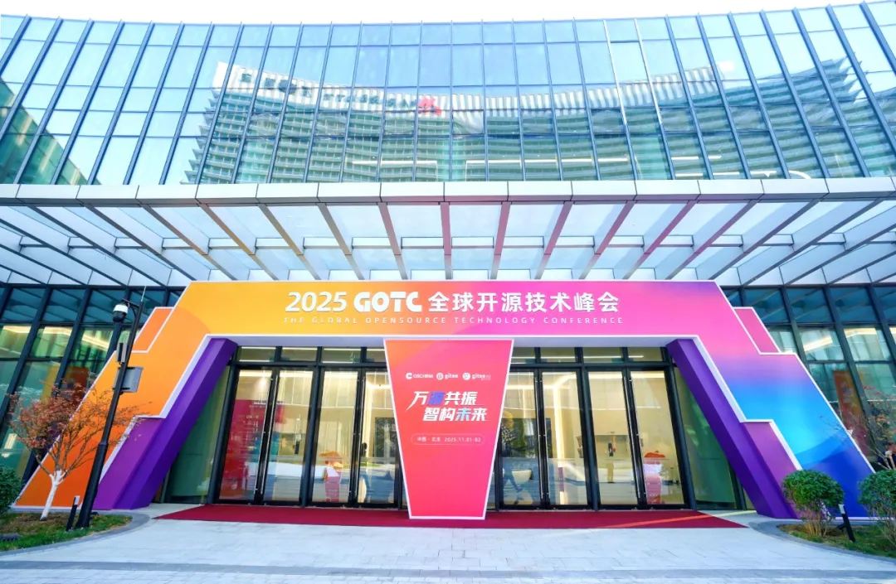

展会 | GreatSQL精彩亮相GOTC 2025 共建开源数据库生态新未来
11月1-2日，为期两天的全球开源技术峰会GOTC 2025在北京圆满落幕。本次大会以"万源共振，智构未来"为主题，汇聚全球开源领域顶尖专家、企业代表及技术开发者。国内活跃的开源数据库社区GreatSQL精彩亮相此次盛会，与各界开源力量深度交流，展现了其在开源数据库领域的技术实力与生态影响力。

汇聚开源力量 GreatSQL展台备受瞩目
作为中国开源领域规格最高、国际影响力最强的年度盛会之一，GOTC 2025吸引了超60家企业与技术社区参展，现场参会人次超过3000，线上直播观看人次突破500万。GreatSQL展台在展会期间迎来了众多数据库爱好者、开发者及企业技术负责人的到访，现场交流气氛热烈。
GreatSQL社区团队成员与来访者深入探讨了开源数据库的技术发展趋势、高可用架构设计、性能优化等热门话题，分享了GreatSQL在金融、电信、互联网等行业的成功实践案例。众多开发者对GreatSQL的性能表现和稳定性给予了高度评价，并表达了后续体验试用的意愿。
开放合作 社区活力持续增强
本届峰会不仅是技术交流的平台，更是生态连接的桥梁。GreatSQL团队积极参与大会组织的各项活动，与开放原子开源基金会、中国开源软件推进联盟、上海开源信息技术协会等国内外重要开源组织进行了深入交流，进一步巩固了在开源社区的合作伙伴关系。
作为曾经获得Gitee“最有价值开源项目”荣誉的社区，GreatSQL始终保持着活跃的技术迭代和社区建设，吸引了越来越多技术开发者的关注和参与。
此次参展，GreatSQL进一步展示了其在开源数据库领域的技术积累和社区活力，与各界伙伴共同探讨了开源与人工智能深度融合背景下，数据库技术的前沿发展方向。
全球开源技术峰会GOTC 2025
开源未来 携手共建新生态
全球开源技术峰会GOTC 2025成功构建了一个开放、协作的交流平台，充分证明了开源已成为加速人工智能技术创新与产业应用的核心驱动力。GreatSQL通过此次参展，不仅提升了社区影响力，还与各界开源力量建立了更加紧密的联系。
未来，GreatSQL社区将继续秉承"万源共振"的理念，与全球开源社区携手共进，持续贡献优质的开源数据库解决方案，助力构建健康、可持续的开源生态体系，为全球开发者创造更多价值。
关于GreatSQL社区
GreatSQL是一个国内活跃的开源数据库社区，成立于2021年，致力于打造高性能、高可靠、易用的开源数据库解决方案，成为中国MySQL技术路线根分支。
社区秉承开放、共享、协作的理念，汇聚了众多数据库开发者和爱好者，共同推动开源数据库技术的发展与应用。GreatSQL曾获“Gitee最有价值开源项目”荣誉，在金融、电信、互联网等多个领域有着广泛应用。